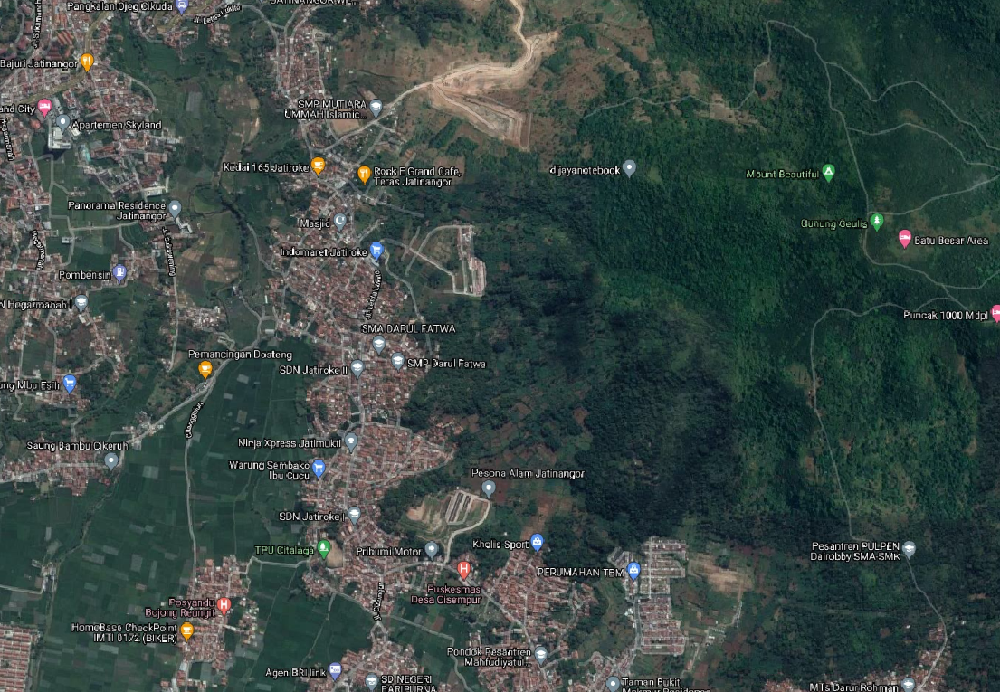

Desa Jatiroke terletak di Kecamatan Jatinangor, Kabupaten Sumedang, Jawa Barat. Desa ini merupakan salah satu desa binaan SITH ITB yang sering digunakan untuk tujuan pengabdian masyarakat dan penelitian. Terdapat area hutan Gunung geulis (hutan pendidikan ITB) yang juga termasuk ke dalam wilayah administratif desa ini. Pada 19 September 2019 lalu, kegiatan protes dilakukan oleh Gabungan Komunitas Peduli Lingkungan Gunung Geulis, Kabupaten Sumedang kepada DPRD Jawa Barat. Berita yang termuat pada laman PikiranRakyat.com ini, disebabkan karena warga ingin pemerintah menertibkan salah satu perusahaan penambangan pasir di kawasan Desa Jatimukti dan Jatiroke, Kecamatan Jatinangor. Penambangan dianggap dapat menyebabkan degradasi lahan yang berujung pada peristiwa sedimentasi dan erosi. Oleh karena itu, kami menantang Kamu untuk menganalisis kerawanan bencana erosi di salah satu desa, yakni Jatiroke. Analisis dilakukan dengan metode USLE (Universal Soil Loss Equation). USLE merupakan metode yang sering digunakan untuk memprediksi tingkat bahaya erosi dan perencanaan penggunaan lahan, serta pemilihan alternatif teknik konservasi tanah (Hariyanto, dkk., 2019).
Agar Peta Kerawanan erosi ini dapat dibuat, saya menggunakan tools intersect di ArcMap untuk menyatukan semua parameter yang dibutuhkan. lalu saya mengklasifikasi kewaranan tersebut menggunakan klasifikais USLE. setelah mengklasifikasi data-data tersebut saya mengekspor data-data dalam bentuk SHP ke QGIS agar dapat diperindah lagi dan membuat WebGIS menggunakan plugins qgis2web.
Setelah saya menggunakan plugins tersebut, saya mengekspor data kode hasil plugins tersebut di dalam komputer saya. Setelah itu saya menggunakan VScode untuk membuat page pembuka ini, dan index.html nya saya pindahakan ke page ini (bukan ke peta). lalu saya menggunakan akun github saya untuk membuat respiratory untuk sebagai hosting untuk page ini. Mohon maaf karena keterbatasan waktu saya tidak bisa banyk menghias website ini dengan CSS dan saya hanya menggunakan internal CSS dalam HTMLnya.
Rumus USLE dinyatakan dengan perkalian nilai spasial pada 5 faktor, yaitu:
Rumus USLE = A (USLE) = R x K x L x S x C x P
Keterangan
Daerah yang dipetakan adalah Desa Jatiroke, Kabupaten Jatinangor, Jawa Barat, Indonesia.
Hasil dari analisis kerawanan erosi untuk daerah desa Jatiroke menyimpulkan bahwa Desa tersbut memiliki mayoritas kerawanan erosi sangat ringan (>90%) dan tidak memiliki daerah yang memiliki kerawanan yang tinggi. Sehingga desa ini dapat digunakan untuk berbagai kebutuhan seperti perkebunan dan pertanian